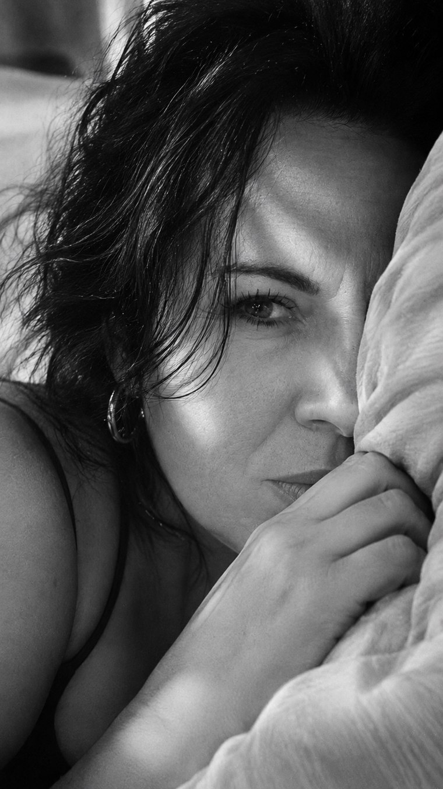

KADR 01 / PORTRETY
Pillow Eye · Minimal B&W Close-Up
Zobacz pełny prompt
Use the supplied reference photograph solely to preserve the same adult subject’s recognizable facial geometry, apparent age, eye shape, nose, lips, jawline, natural asymmetry, skin texture, hair color and hairstyle, and natural body proportions. Do not beautify, de-age, replace the subject, or invent identifying traits. Keep glasses only when the selected reference or user instruction calls for them. Create a minimal, artistic black-and-white close-up of the reference adult woman lying on a pillow. Frame the face asymmetrically so that one expressive eye is clearly visible while the rest is partly hidden by the pillow, natural hair, and a relaxed hand near the face. Use soft directional window light, subtle shadow transitions, natural pores and fine lines, intimate shallow depth of field, and restrained analog film grain. Avoid glamour retouching. Quality and identity priority: maintain believable photographic lighting and precise natural features.